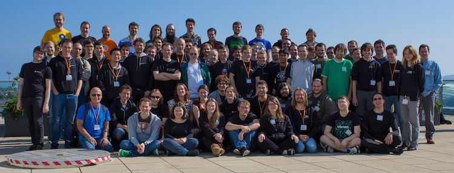
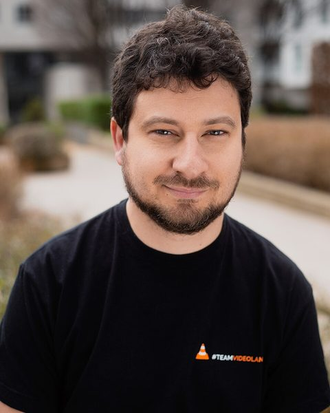

يصنع VLC متطوّعون ومطوّرون من أكثر من 40 دولة، مع خرّيجي المدرسة المركزية في باريس حيث بدأ كل شيء.

مجلس الإدارة
VideoLAN جمعية غير ربحية وفق القانون الفرنسي، ينتخب أعضاؤها مجلس إدارتها.

الرئيس
Jean-Baptiste Kempf
يقود VideoLAN ويشرف على VLC منذ أكثر من خمسة عشر عامًا. شارك في تأسيس Videolabs.
نائب الرئيس
Konstantin Pavlov
يحافظ على عمل البنية التحتية وآلية الإصدارات في VideoLAN.
نائب الرئيس للفعاليات
Vibhoothi
ينظّم أيام مطوّري VideoLAN وحضور المشروع في المؤتمرات.
أمين الصندوق
Thomas Guillem
مطوّر أساسي في VLC وlibVLC، ومسؤول الحسابات.
أمين السر
Felix Paul Kühne
يقود VLC على منصّات Apple: macOS وiOS وtvOS وvisionOS.
الصورة: Axelle Manfrini، برخصة CC BY-SA 4.0، عبر Wikimedia Commons.
الأشخاص وراء VLC
كل من ورد اسمه في قائمة المساهمين الرسمية لـ VLC. ابحث عن اسم.
- Rémi Denis-Courmont
- Jean-Baptiste Kempf
- Laurent Aimar
- François Cartegnie
- Gildas Bazin
- Felix Paul Kühne
- Rafaël Carré
- Pierre d'Herbemont
- Thomas Guillem
- Rémi Duraffort
- Derk-Jan Hartman
- Antoine Cellerier
- Samuel Hocevar
- Jean-Paul Saman
- Steve Lhomme
- Christophe Mutricy
- Clément Stenac
- Christophe Massiot
- Ilkka Ollakka
- Pierre Ynard
- Filip Roséen
- Damien Fouilleul
- Sigmund Augdal Helberg
- Erwan Tulou
- David Fuhrmann
- Marvin Scholz
- Olivier Teulière
- Cyril Deguet
- Eric Petit
- Filippo Carone
- Rocky Bernstein
- Hugo Beauzée-Luyssen
- Olivier Aubert
- Pavlov Konstantin
- Jakob Leben
- Benjamin Pracht
- Jean-Philippe André
- Stéphane Borel
- JP Dinger
- Geoffroy Couprie
- Martin Storsjö
- Marian Ďurkovič
- Ludovic Fauvet
- Petri Hintukainen
- Yoann Peronneau
- Denis Charmet
- Sébastien Escudier
- Jon Lech Johansen
- KO Myung-Hun
- Edward Wang
- Dennis van Amerongen
- Faustino Osuna
- Mirsal Ennaime
- Sean McGovern
- Jérôme Decoodt
- Loïc Minier
- David Flynn
- Frédéric Yhuel
- Kaarlo Raiha
- Mark Moriarty
- Christopher Mueller
- Fabio Ritrovato
- Tony Castley
- Srikanth Raju
- Michel Kaempf
- Jean-Marc Dressler
- Johan Bilien
- Vincent Seguin
- Simon Latapie
- Bernie Purcell
- Henri Fallon
- Sebastien Zwickert
- Christoph Miebach
- Adrien Maglo
- Emmanuel Puig
- Renaud Dartus
- Alexis de Lattre
- Vincent Penquerc'h
- Arnaud de Bossoreille de Ribou
- Mohammed Adnène Trojette
- Salah-Eddin Shaban
- Vittorio Giovara
- Boris Dorès
- Jai Menon
- Anil Daoud
- Daniel Mierswa
- Naohiro Koriyama
- Rob Jonson
- Pierre Baillet
- Dominique Leuenberger
- Andre Pang
- Zoran Turalija
- Akash Mehrotra
- André Weber
- Anthony Loiseau
- Lukas Durfina
- Xavier Marchesini
- Cyril Mathé
- Devin Heitmueller
- Juho Vähä-Herttua
- Ken Self
- Alexis Ballier
- Juha Jeronen
- Nicolas Chauvet
- Richard Hosking
- Éric Lassauge
- Marc Ariberti
- Sébastien Toque
- Tobias Güntner
- Benoit Steiner
- Michel Lespinasse
- Carlo Calabrò
- Cheng Sun
- Michał Trzebiatowski
- Brad Smith
- Brendon Justin
- Alexey Sokolov
- Basos G
- Philippe Morin
- Steinar H. Gunderson
- Vicente Jimenez Aguilar
- Yuval Tze
- Yves Duret
- Benjamin Drung
- Michael Hanselmann
- Alex Merry
- Damien Lucas
- Grigori Goronzy
- Richard Shepherd
- Gaël Hendryckx
- Michael Feurstein
- Stephan Assmus
- Adrien Grand
- Colin Guthrie
- David Menestrina
- Dominique Martinet
- Gleb Pinigin
- Jason Luka
- Luc Saillard
- Luca Barbato
- Mario Speiß
- Pankaj Yadav
- Ramiro Polla
- Ronald Wright
- Rui Zhang
- Can Wu
- Christophe Courtaut
- FUJISAWA Tooru
- Hannes Domani
- Manol Manolov
- Timothy B. Terriberry
- Antoine Lejeune
- Arnaud Schauly
- Branko Kokanovic
- Dylan Yudaken
- Florian G. Pflug
- François Revol
- G Finch
- Keary Griffin
- Konstanty Bialkowski
- Ming Hu
- Philippe Coent
- Przemyslaw Fiala
- Tanguy Krotoff
- Vianney BOYER
- Casian Andrei
- Chris Smowton
- David Kaplan
- Eugenio Jarosiewicz
- Fabian Keil
- Guillaume Poussel
- John Peterson
- Justus Piater
- Mark Lee
- Martin T. H. Sandsmark
- Rune Botten
- Søren Bøg
- Toralf Niebuhr
- Tristan Matthews
- Angelo Haller
- Aurélien Nephtali
- Austin Burrow
- Bill C. Riemers
- Colin Delacroix
- Cristian Maglie
- Elminster2031
- Jakub Wieczorek
- John Freed
- Mark Hassman
- Martin Briza
- Mike Houben
- Romain Goyet
- Adrian Yanes
- Alexander Lakhin
- Anatoliy Anischovich
- Barry Wardell
- Ben Hutchings
- Besnard Jean-Baptiste
- Brian Weaver
- Clement Chesnin
- David Geldreich
- Diego Elio Pettenò
- Diego Fernando Nieto
- Georgi Chorbadzhiyski
- Jon Stacey
- Jonathan Rosser
- Joris van Rooij
- Kaloyan Kovachev
- Katsushi Kobayashi
- Kelly Anderson
- Loren Merritt
- Maciej Blizinski
- Mark Bidewell
- Miguel Angel Cabrera Moya
- Niles Bindel
- Samuel Pitoiset
- Scott Caudle
- Sean Robinson
- Sergey Radionov
- Simon Hailes
- Stephen Parry
- Sukrit Sangwan
- Thierry Reding
- Xavier Martin
- Alex Converse
- Alexander Bethke
- Alexandre Ratchov
- Andres Krapf
- Andrey Utkin
- Andri Pálsson
- Andy Chenee
- Anuradha Suraparaju
- Benjamin Poulain
- Brieuc Jeunhomme
- Chris Clayton
- Clément Lecigne
- Cédric Cocquebert
- Daniel Peng
- Danny Wood
- David K
- Edouard Gomez
- Emmanuel de Roux
- Frode Tennebø
- GBX
- Gaurav Narula
- Geraud CONTINSOUZAS
- Hugues Fruchet
- Jan Winter
- Jean-François Massol
- Jean-Philippe Grimaldi
- Josh Watzman
- Kai Lauterbach
- Konstantin Bogdanov
- Kuan-Chung Chiu
- Kuang Rufan
- Matthias Dahl
- Michael McEll
- Michael Ploujnikov
- Mike Schrag
- Nickolai Zeldovich
- Nicolas Bertrand
- Niklas Hayer
- Olafs Vandāns
- Olivier Gambier
- Paul Corke
- Ron Frederick
- Rov Juvano
- Sabourin Gilles
- Sam Lade
- Sandeep Kumar
- Sasha Koruga
- Sreng Jean
- Sven Petai
- Tomas Krotil
- Tomer Barletz
- Tristan Leteurtre
- Wang Bo
- maxime Ripard
- xxcv
- Adam Hoka
- Adrian Knoth
- Adrien Cunin
- Alan Fischer
- Alan McCosh
- Alex Helfet
- Alexander Terentyev
- Alexandre Ferreira
- Alina Friedrichsen
- An L. Ber
- Andreas Schlick
- Andrew Schubert
- Andrey Makhnutin
- Arnaud Vallat
- Asad Mehmood
- Ashok Bhat
- Austin English
- Baptiste Coudurier
- Benoit Calvez
- Björn Stenberg
- Blake Livingston
- Brandon Brooks
- Brian Johnson
- Brian Kurle
- Cezar Elnazli
- Chris White
- Christian Masus
- Christoph Pfister
- Christoph Seibert
- Christopher Key
- Christopher Rath
- Claudio Ortelli
- Cody Russell
- Cristian Morales Vega
- Dan Rosenberg
- Daniel Marth
- Daniel Tisza
- Detlef Schroeder
- Diego Biurrun
- Dominik 'Rathann' Mierzejewski
- Duncan Salerno
- Edward Sheldrake
- Elliot Murphy
- Eren Inan Canpolat
- Ernest E. Teem III
- Etienne Membrives
- Fargier Sylvain
- Fathi Boudra
- Felix Geyer
- Filipe Azevedo
- Finn Hughes
- Florian Hubold
- Florian Roeske
- Frank Enderle
- Frédéric Crozat
- Georg Seifert
- Gertjan Van Droogenbroeck
- Gilles Chanteperdrix
- Greg Farrell
- Gregory Maxwell
- Gwenole Beauchesne
- Götz Waschk
- Hans-Kristian Arntzen
- Harry Sintonen
- Iain Wade
- Ibraheem Paredath
- Isamu Arimoto
- Ismael Luceno
- James Bates
- James Bond
- James Turner
- Janne Grunau
- Janne Kujanpää
- Jarmo Torvinen
- Jason Scheunemann
- Jeff Lu
- Jeroen Ost
- Joe Taber
- Johann Ransay
- Johannes Weißl
- John Hendrikx
- John Stebbins
- Jonas Gehring
- Joseph S. Atkinson
- Juergen Lock
- Julien 'Lta' BALLET
- Julien / Gellule
- Julien Humbert
- Kamil Baldyga
- Kamil Klimek
- Karlheinz Wohlmuth
- Kevin Anthony
- Kevin DuBois
- Lari Natri
- Lorenzo Pistone
- Lucas C. Villa Real
- Lukáš Lalinský
- Mal Graty
- Malte Tancred
- Martin Pöhlmann
- Martin Zeman
- Marton Balint
- Mathew King
- Mathieu Sonet
- Matthew A. Townsend
- Matthias Bauer
- Mika Tiainen
- Mike Cardillo
- Mounir Lamouri (volkmar)
- Natanael Copa
- Nathan Phillip Brink
- Nick Briggs
- Nick Pope
- Nil Geiswiller
- Pascal Thomet
- Pere Orga
- Peter Bak Nielsen
- Phil Roffe and David Grellscheid
- Philip Sequeira
- Pierre Souchay
- Piotr Fusik
- Pádraig Brady
- R.M
- Ralph Giles
- Ramon Gabarró
- Robert Forsman
- Robert Jedrzejczyk
- Robert Paciorek
- Rolf Ahrenberg
- Roman Pen
- Ruud Althuizen
- Samuli Suominen
- Scott Lyons
- Sebastian Birk
- Sergey Puzanov
- Sergio Ammirata
- Sharad Dixit
- Song Ye Wen
- Stephan Krempel
- Steven Kramer
- Steven Sheehy
- Sveinung Kvilhaugsvik
- Sylvain Cadhillac
- Sylver Bruneau
- Takahito HIRANO
- Theron Lewis
- Thijs Alkemade
- Tillmann Karras
- Timo Paulssen
- Timo Rothenpieler
- Tobias Rapp
- Tomasen
- Tony Vankrunkelsven
- Tristan Heaven
- Varphone Wong
- Vasily Fomin
- Vikram Narayanan
- Yannick Bréhon
- Yavor Doganov
- Yohann Martineau
- dharani.prabhu.s
- suheaven
- wucan
- 김정은
- Adam Sampson
- Alexander Gall
- Alex Antropoff
- Alexis Guillard
- Alex Izvorski
- Amir Gouini
- Andrea Guzzo
- Andrew Flintham
- Andrew Zaikin
- Andy Lindsay
- Arai/Fujisawa Tooru
- Arkadiusz Miskiewicz
- Arnaud Gomes-do-Vale
- Arwed v. Merkatz
- Barak Ori
- Basil Achermann
- Benjamin Mironer
- Bill
- Bob Maguire
- Brian C. Wiles
- Brian Raymond
- Brian Robb
- Carsten Gottbehüt
- Carsten Haitzler
- Charles Hordis
- Chris Clepper
- Christian Henz
- Christof Baumgaertner
- Christophe Burgalat
- Christopher Johnson
- Cian Duffy
- Colin Simmonds
- Damian Ivereigh
- Daniel Fischer
- Daniel Stränger
- Danko Dolch
- Dennis Lou
- Dermot McGahon
- Douglas West
- Dugal Harris
- Emmanuel Blindauer
- Enrico Gueli
- Enrique Osuna
- Eren Türkay
- Eric Dudiak
- Espen Skoglund
- Ethan C. Baldridge
- François Seingier
- Frans van Veen
- Frédéric Ruget
- Gerald Hansink
- Gisle Vanem
- Glen Gray
- Goetz Waschk
- Gregory Hazel
- Gustaf Neumann
- Hang Su
- Hans Lambermont
- Hans-Peter Jansen
- Harris Dugal
- Heiko Panther
- Igor Helman
- Isaac Osunkunle
- Jan David Mol
- Jan Gerber
- Jan Van Boghout
- Jasper Alias
- Jean-Alexis Montignies
- Jean-Baptiste Le Stang
- Jeffrey Baker
- Jeroen Massar
- Jérôme Guilbaud
- Johannes Buchner
- Johen Michael Zorko
- Johnathan Rosser
- John Dalgliesh
- John Paul Lorenti
- Jörg
- Joseph Tulou
- Julien Blache
- Julien Plissonneau Duquène
- Julien Robert
- Kenneth Ostby
- Kenneth Self
- Kevin H. Patterson
- Koehler, Vitally
- K. Staring
- Lahiru Lakmal Priyadarshana
- Laurent Mutricy
- Leo Spalteholz
- Loox Thefuture
- Marc Nolette
- Marco Munderloh
- Mark Gritter
- Markus Kern
- Markus Kuespert
- Martin Hamrle
- Martin Kahr
- Mateus Krepsky Ludwich
- Mathias Kretschmer
- Mats Rojestal
- Matthias P. Nowak
- Matthieu Lochegnies
- Michael Mondragon
- Michael S. Feurstein
- Michel Lanners
- Mickael Hoerdt
- Miguel Angel Cabrera
- Mikko Hirvonen
- Moritz Bunkus
- Nilmoni Deb
- Olivier Houchard
- Olivier Pomel
- Ondrej Kuda aka Albert
- Øyvind Kolbu
- Pascal Levesque
- Patrick Horn
- Patrick McLean
- Pauline Castets
- Paul Mackerras
- Peter Surda
- Petr Vacek
- Philippe Van Hecke
- Pierre-Luc Beaudoin
- Pierre Marc Dumuid
- Régis Duchesne
- Remco Poortinga
- Rene Gollent
- Rob Casey
- Robson Braga Araujo
- Roine Gustafsson
- Roman Bednarek
- Rudolf Cornelissen
- Sašo Kiselkov
- Sebastian Jenny
- Shane Harper
- Stefán Freyr Stefánsson
- Steve Brown
- Steven M. Schultz
- Tapio Hiltunen
- Thomas L. Wood
- Thomas Mühlgrabner
- Thomas Parmelan
- Tim 'O Callagha
- Tim Schuerewegen
- Tong Ka Man
- Torsten Spindler
- Udo Richter
- Vincent Dimar
- Vincent Penne
- Vitalijus Slavinskas
- Vitaly V. Bursov
- Vladimir Chernyshov
- Wade Majors
- Wallace Wadge
- Watanabe Go
- William Hawkins
- Xavier Maillard
- Ye zhang
- Yuehua Zhao
- Abylay Ospan
- Adam Leggett
- Adrian Haensler
- Ago Allikmaa
- Ajith Manjula Senarathne
- Alain Degreffe
- Alan Pope
- Aleksandr Pasechnik
- Alexandre Fernandez
- Alexandre Pereira Nunes
- Alexandre Perraud
- Alex Peak
- Alex Warhawk
- Alex Woods
- Allan Odgaard
- Ancelot Mark Pinto
- Andrea Giudiceandrea
- Andreas Hartmetz
- Andreas Mieke
- André Silva
- Andrew Clayton
- Andrey Gursky
- Andrii Zui
- Andy Tather
- Antti Ajanki
- Ara Qadir
- Arjun Sreedharan
- Arne de Bruijn
- Arun Pandian G
- A S Alam
- Avani Sharma
- Avishay Spitzer
- Bastien Penavayre
- Benjamin Adolphi
- Ben Littler
- Benoit du Payrat
- Benoît Noël du Payrat
- Bernd Kuhls
- Boris Egorov
- Boy van Amstel
- Brian Schmidt
- Brion Vibber
- Cameron Mozie
- Carlos Fenollosa
- Carola Nitz
- Christian Suloway
- Clemens Werther
- C.W. Betts
- Daniel Amm
- Daniel Verkamp
- Darko Jankovic
- Darrell Walisser
- David Robison
- David R Robison
- Dennis Hamester
- Derek Buitenhuis
- Diogo Silva
- Dominko Azdajic
- Donald Campbell
- Doney den Ouden
- Duncan McNamara
- Duncan McNAMARA
- Elodie Thomann
- Emeric Grange
- Eric Engestrom
- Etienne BRATEAU
- Eugen Geist
- Fabian Yamaguchi
- Fabrizio Ge
- Fabrizio Gennari
- Fahad Al-Saidi
- Felix Abecassis
- Florent Pillet
- Forteve Zepushisti
- Frank Praznik
- Gabriel de Perthuis
- Gal Vinograd
- Gaurav Pruthi
- Geoffrey Métais
- Gian Marco Sibilla
- Gilles Sabourin
- Gina Dobrescu
- Gonzalo Higuera Díaz
- Goran Dokic
- Guillaume Gomez
- Harald Sitter
- Heorhi Valakhanovich
- Ian Chamberlain
- Ibrahima SARR
- Igor Prokopenkov
- Ion Agorria
- Jarrad Whitaker
- Jean-Yves Avenard
- Jed Smith
- Jérémy Carrier
- Jeremy Huddleston Sequoia
- Jerome Forissier
- Jim Bankoski
- Jonas Lundqvist
- Jonatan "jaw" Wallmander
- Jonathan Calmels
- Jonathan Heard
- Jonathan McGowan
- Jonathan Thambidurai
- Joni Räsänen
- Josef Andersson
- Joseph DeVore
- Julian Scheel
- Justin Kim
- Kaarlo Räihä
- Kamil Rytarowski
- Kazuki Yamaguchi
- Konstantin K. Beliak
- Konstantinos Tsanaktsidis
- Konstantin Pavlov
- Kornel Lesiński
- Olivier Langlois
- Lochlin Duperron
- Lukas Juhrich
- Lyndon Brown
- Marc Aldorasi
- Marcel Schnirring
- Marc Etcheverry
- Mariusz Wasak
- Mark Becwar
- Martell Malone
- Mathieu Malaterre
- Mathieu Parent
- Mathieu Velten
- Matthias Keiser
- Matthias Treydte
- Max Dilipovich
- Maxim Bublis
- Maxime CHAPELET
- Maxime Mouchet
- Michael Tänzer
- Miha Sokolov
- Mohammed (Shaan) Huzaifa Danish
- Moti Zilberman
- Nathan Egge
- Niklas Haas
- Odd-Arild Kristensen
- O. Hartmann
- Olaf Hering
- Oliver Collyer
- Paul B Mahol
- Paul Clark
- Paulo Vitor Magacho da Silva
- Pavol Babincak
- Paweł Stankowski
- Petter Reinholdtsen
- Philip Höhlein
- Pierre-Hugues Husson
- Pierre Lamot
- Pyry Kontio
- Radek Vybiral
- Rafael Waldo Delgado Doblas
- Rajeesh K V
- Ray Tiley
- Reka Inovan
- Remita Amine
- Ricardo Ribalda Delgado
- Richard Diamond
- Rinat Ibragimov
- Robert Mourning
- Romain Bentz
- Romain Fliedel
- Romain Vimont
- Ronald S. Bultje
- Ross Finlayson
- Sam Malone
- Samuel Martin
- Samuel Thibault
- Sanchit Arora
- Santiago Gimeno
- Sebastian Ramacher
- Sebastian Roth
- Sergey Bolshakov
- Shaleen Jain
- Shlomi Fish
- Simona-Marinela Prodea
- Stanislas Plessia
- Stefan Pöschel
- Steven Toth
- Sushma Reddy
- Takahito Hirano
- T. Chomphuming
- Thierry Foucu
- Thomas Nigro
- Tim Allen
- Tim Walker
- Tobias Conradi
- Tony Gaillard
- Benoît Tuduri
- Tzu-Jung Lee
- Uwe L. Korn
- Valentin Deniaud
- Valentin Vetter
- Valter Correia
- Vianney Boyer
- Victorien Le Couviour--Tuffet
- Vikram Fugro
- Vinson Lee
- Wayne McDougall
- Wieland Hoffmann
- Wills Wang
- Xabier Aramendi
- Yaşar Tay
- Yidong Ren
- Yuudai Yamashigi
- Zhao Zhili
- أحمد المحم ودي (Ahmed El-Mahmoudy)
- Баярсайхан Энхтайван
- Сергей Дарьичев
- Noah Davis
- Abdul Fousan - Tamil
- A. Decorte - Friulian
- A. Regnander - Swedish
- Adem Gunes - Turkish
- Adi Nugroho - Tagalog
- Adnan Memija - Bosnian
- airplanez - Korean
- Ajith Manjula - Sinhala
- Aled Powell - Welsh
- Alexander Didebulidze - Georgian
- Alexander Henket - Dutch
- Alexander Jansen - Norwegian Bokmål
- Alexander Lakhin - Russian
- Alexey Lugin - Ukrainian
- Alexey Salmin - Russian
- Alfred John - Acoli
- Amanpreet Singh Alam - Punjabi
- André de Barros Martins Ribeiro - Brazilian portuguese
- Andrey Brilevskiy - Russian
- Andrey Wolk - Russian
- Andri Pálsson - Icelandic
- Andriy Bandura - Ukrainian
- Anh Phan - Vietnamese
- Aniket Eknath Kudale - Marathi
- Animesh Swar - Nepalese
- Aputsiaĸ Niels Janussen - Danish
- Ara Bextiyar - Sorani (Kurdish)
- Ari Constâncio - Portuguese
- Arkadiusz Lipiec - Polish
- Ask Hjorth Larsen - Danish
- Audrey Prevost - French
- Auk Piseth - Khmer
- Bayarsaikhan Enkhtaivan Баярсайхан Энхтайван - Mongolian
- Biraj Karmakar - Bengali (India)
- Bruno Queirós - Portuguese
- Bruno Vella - Italian
- Caner Başaran - Turkish
- Carlo Calabrò - Italian
- Chandan Kumar - Hindi
- Chesús Daniel Trigo - Aragonese
- Christoph Miebach - German
- Chynggyz Jumaliev - Kirgyz
- Circo Radu - Romanian
- Cristian Secară - Romanian
- Daniel Nylander - Swedish
- Daniel Winzen - German
- David González - Spanish
- David Planella - Catalan
- Dean Lee - Simplified Chinese
- Denis Arnaud - Breton
- Derk-Jan Hartman - Dutch
- DirektX - Hungarian
- Dominko Aždajić - Croatian
- Dylan Aïssi - French
- Đorđe Vasiljević - Serbian
- Eduard Babayan - Armenian
- Eero - Estonian
- Eirik U. Birkeland - Norwegian Nynorsk
- Elizabeth Da Conceicao Baptista - Tetum
- Emilio Sepúlveda - Interlingua
- Emin Mastizada - Azerbaijani
- Éric Lassauge - French
- Farzaneh Sarafraz - Persian
- Florence Tushabe - Chiga
- Fouzia Bourai - Arabic
- Frank Chao - Traditional Chinese
- Freyr Gunnar Ólafsson - Icelandic
- Friedel Wolff - Afrikaans
- Fumio Nakayama - Japanese
- Gabor Kelemen - Hungarian
- Gaurav Kumar - Hindi
- Gaëtan Rousseaux - Walloon
- Ghjuvan Pasquinu - Corsican
- Goce Manevski - Macedonian
- Golam Maruf Oovee - Bengali
- Gonçalo Cordeiro - Galician
- Gorana Milicevic - Serbian
- Goswami Hardikpuri Kishorpuri - Gujarati
- Haakon Meland Eriksen - Norwegian
- Han HoJoong - Korean
- Hardik Kishorpuri Goswami - Gujarati
- Hemanta Nandi - Bengali (India)
- Hugo Carvalho - Portuguese
- Huw Waters - Welsh
- H.Shalitha Vikum - Sinhala
- Ibrahima Sarr - Fulah
- Ingmārs Dīriņš - Latvian
- Israt Jahan - Bengali
- Ivar Smolin - Estonian
- Iván Seoane Pardo - Galician
- Ivo Ivanov - Bulgarian
- Iñaki Larrañaga Murgoitio - Basque
- Iñigo Varela - Asturian; Bable
- Jakub Žáček - Czech
- James Olweny - Ganda
- Jamil Ahmed - Bengali
- Javier Varela - Spanish
- Jean-Pierre Kuypers - French
- Jens Seidel - German
- Joao Almeida - Portuguese
- Joel Arvidsson - Swedish
- jogijs - Latvian
- Jonas Larsen - Danish
- Jon Stødle - Norwegian Nynorsk
- Jouni Kähkönen - Finnish
- Juha Jeronen - Finnish
- Julen Ruiz Aizpuru - Basque
- Kai Hermann - German
- Kamil Páral - Czech
- Kang Jeong-Hee - Korean
- Kasper Tvede - Danish
- Kaya Zeren - Turkish
- Kenneth Nielsen - Danish
- Khin Mi Mi Aung - Burmese
- Khoem Sokhem - Khmer
- Kola - Albanian
- Kypchak Kypchak - Kazakh
- Laurent Jonqueres - Occitan
- Loba Yeasmeen - Bengali
- Lorena Gomes - Catalan
- Lorenzo Porta - Italian
- Luqman Hakim - Indonesian
- L. Balasubramaniam - Hindi
- Mahrazi Mohd Kamal - Malay
- Manolis Stefanis - Modern Greek
- Manuela Silva/Alfredo Silva - Portuguese
- Marián Hikaník - Slovak
- Mario Siegmann - German
- Marko Uskokovic - Serbian
- Martin Srebotnjak - Slovenian
- Martin Zicha - Czech
- Matej Urbančič - Slovenian
- Mathias C. Berens, welcome-soft - German
- Mattias Põldaru - Estonian
- Md. Rezwan Shahid - Bengali
- Meelad Zakaria - Persian
- Michael Bauer - Scottish Gaelic
- Michal Halenka - Czech
- Michał Trzebiatowski - Polish
- Miguel Sousa - Portuguese
- Mihkel Kirjutas - Estonian
- Mindaugas Baranauskas - Lithuanian
- Miroslav Oujeský - Czech
- Morten Brix Pedersen - Danish
- Mustafa Sandal - Czech
- Myckel Habets - Dutch
- Namhyung Kim - Korean
- Niels Fanøe - Danish
- Niklas 'Nille' Åkerström - Swedish
- Olav Dahlum - Norwegian Bokmål
- Oleksandr Natalenko - Ukrainian
- Omer Ensari - Kurmanji (Kurdish)
- Osama Khalid - Arabic
- Otto Kekäläinen - Finnish
- Paras Nath Chaudhary - Nepali
- Pasindu Kavinda - Sinhala
- Pau Iranzo - Catalan
- Paula Iglesias - Galician
- Pedro Valadares - Portuguese
- Peter Jespersen - Danish
- Petr Šimáček - Czech
- Phan Anh - Vietnamese
- Philipp Weissenbacher - German
- Pittayakom Saingtong - Thai
- Prasannajit Acharya - Oriya
- Praveen Illa - Telugu
- Predrag Ljubenović - Serbian
- Pyae Sone - Burmese
- Rajnikant Kumbhar - Marathi
- Ricardo Perdigão - Portuguese
- Ricardo Pérez López - Spanish
- Roustam Ghizdatov - Russian
- Ruei-Yuan Lu - Traditional Chinese
- Saad Liaquat Kiani - Urdu
- Sadia Afroz - Bengali
- Said Marjan Zazai - Pashto
- Salar Khalilzadeh - Persian
- Sam Askari - Spanish
- Sam Hocevar - British
- Samuel Hocevar - French
- Saúl Ortega - Spanish
- Savvas Nesseris - Modern Greek
- Sayan Chowdhury - Hindi
- Seanán Ó Coistín - Irish
- Semsudin Abdic - Bosnian
- Shambhu Kumar - Hindi
- Shantanu Sarkar - Hindi
- Shashi Ranjan - Hindi
- Siarhei Daryichau Дар'ічаў Сяргей - Belarusian
- Sidney Doria - Brazilian Portuguese
- Sigmund Augdal - Norwegian Bokmål
- Simos Xenitellis - Modern Greek
- Sipho Sibiya - Zulu
- Sok Sophea - Khmer
- Solomon Gizaw - Amharic
- Sreejith P - Malayalam
- Suraj Kawade - Marathi
- Stian Jørgensrud - Norwegian Bokmål
- Sveinn í Felli - Icelandic
- Tadashi Jokagi - Japanese
- Tarsem Singh - Hindi
- Thanakrit Chomphuming - Thai
- Tero Pelander - Finnish
- Thomas De Rocker - Dutch
- Thomas Graf - gettext support, German
- Tomáš Chvátal - Czech
- Tòni Galhard - Occitan
- Umesh Agarwal - Bengali (India)
- Umidjon Almasov - Uzbek
- Václav Pavlíček - Czech
- Valek Filippov - Russian
- Vicente Jimenez Aguilar - Spanish
- Vincenzo Reale - Italian
- Vít Pelčák - Czech
- viyyer - Hindi
- Vladimir Yermolayev - Russian
- Vojtěch Smejkal - Czech
- Wei Mingzhi - Simplified Chinese
- Xènia Albà Cantero - Catalan
- Xuacu Saturio - Asturian
- Yaron Shahrabani - Hebrew
- Yaşar Tay - Turkish
- Yhal Htet Aung - Burmese
- Yogesh K S - Kannada
- Yoyo - Simplified Chinese
- Yuksel Yildirim - Turkish
- Zabeeh Khan - Pashto
- Zhang Tong - Chinese
- Damien Erambert
- Daniel Dreibrodt, aka aLtgLasS
- David Weber
- Davor Orel
- Dominic Spitaler
- Doney den Ouden
- Eurodata Computer Club
- Geoffrey Roussel
- Joeri van Dooren
- kty0ne
- Max Rudberg
- Richard Øiestad
- Simon Damkjær Andersen
- Tom Bigelajzen
- Vincent van den Heuvel
- Bill Eldridge
لا نتائج. جرّب كلمة أخرى.
تريد أن يظهر اسمك هنا؟
البرمجة والترجمة والتوثيق والتصميم والدعم، كلها مساهمات.
المرجع الكامل من videolan.orgالنص الأصلي الكامل لهذه الصفحة كما هو.
The VideoLAN team is made up of developers from all over the world and former students of the École Centrale Paris:
The developers
There is a description of what they worked on, so that you can spot cool dudes. Note that dudes with a SVN account are very cool dudes. If you want to email a dude you will need to replace the '-replacewith@-' part with '@'.
The libdvbpsi team
The libdvdcss team
Billy Biggs
- libdvdcss enhancements
Sven Heithecker
- cache bug fix for discs with identical content but different keys
Samuel Hocevar
- original CSS decryption code from vlc
Eugenio Jarosiewicz
- MacOS X DVD ioctls
Jon Lech Johansen
- Win32 port
- Fixes to the Darwin port
KO Myung-Hun
- OS/2 port
Jean-Baptiste Kempf
- maintainer
Markus Kuespert
- BeOS port of the DVD ioctls
Pascal Levesque
- QNX port
Steve Lhomme
- win32 improvements
Christophe Massiot
- former maintainer
Steven M. Schultz
- BSD/OS port
Alex Strelnikov
- OS/2 port
German Tischler
- FreeBSD DVD input patch
Gildas Bazin
- various fixes to the Win32 port
VideoLAN and the VLC team would like to acknowledge the following contributors:
Programming
-----------
Rémi Denis-Courmont
Jean-Baptiste Kempf
Laurent Aimar
François Cartegnie
Gildas Bazin
Felix Paul Kühne
Rafaël Carré
Pierre d'Herbemont
Thomas Guillem
Rémi Duraffort
Derk-Jan Hartman
Antoine Cellerier
Samuel Hocevar
Jean-Paul Saman
Steve Lhomme
Christophe Mutricy
Clément Stenac
Christophe Massiot
Ilkka Ollakka
Pierre Ynard
Filip Roséen
Damien Fouilleul
Sigmund Augdal Helberg
Erwan Tulou
David Fuhrmann
Marvin Scholz
Olivier Teulière
Cyril Deguet
Eric Petit
Filippo Carone
Rocky Bernstein
Hugo Beauzée-Luyssen
Olivier Aubert
Pavlov Konstantin
Jakob Leben
Benjamin Pracht
Jean-Philippe André
Stéphane Borel
JP Dinger
Geoffroy Couprie
Martin Storsjö
Marian Ďurkovič
Ludovic Fauvet
Petri Hintukainen
Yoann Peronneau
Denis Charmet
Sébastien Escudier
Jon Lech Johansen
KO Myung-Hun
Edward Wang
Dennis van Amerongen
Faustino Osuna
Mirsal Ennaime
Sean McGovern
Jérôme Decoodt
Loïc Minier
David Flynn
Frédéric Yhuel
Kaarlo Raiha
Mark Moriarty
Christopher Mueller
Fabio Ritrovato
Tony Castley
Srikanth Raju
Michel Kaempf
Jean-Marc Dressler
Johan Bilien
Vincent Seguin
Simon Latapie
Bernie Purcell
Henri Fallon
Sebastien Zwickert
Christoph Miebach
Adrien Maglo
Emmanuel Puig
Renaud Dartus
Alexis de Lattre
Vincent Penquerc'h
Arnaud de Bossoreille de Ribou
Mohammed Adnène Trojette
Salah-Eddin Shaban
Vittorio Giovara
Boris Dorès
Jai Menon
Anil Daoud
Daniel Mierswa
Naohiro Koriyama
Rob Jonson
Pierre Baillet
Dominique Leuenberger
Andre Pang
Zoran Turalija
Akash Mehrotra
André Weber
Anthony Loiseau
Lukas Durfina
Xavier Marchesini
Cyril Mathé
Devin Heitmueller
Juho Vähä-Herttua
Ken Self
Alexis Ballier
Juha Jeronen
Nicolas Chauvet
Richard Hosking
Éric Lassauge
Marc Ariberti
Sébastien Toque
Tobias Güntner
Benoit Steiner
Michel Lespinasse
Carlo Calabrò
Cheng Sun
Michał Trzebiatowski
Brad Smith
Brendon Justin
Alexey Sokolov
Basos G
Philippe Morin
Steinar H. Gunderson
Vicente Jimenez Aguilar
Yuval Tze
Yves Duret
Benjamin Drung
Michael Hanselmann
Alex Merry
Damien Lucas
Grigori Goronzy
Richard Shepherd
Gaël Hendryckx
Michael Feurstein
Stephan Assmus
Adrien Grand
Colin Guthrie
David Menestrina
Dominique Martinet
Gleb Pinigin
Jason Luka
Luc Saillard
Luca Barbato
Mario Speiß
Pankaj Yadav
Ramiro Polla
Ronald Wright
Rui Zhang
Can Wu
Christophe Courtaut
FUJISAWA Tooru
Hannes Domani
Manol Manolov
Timothy B. Terriberry
Antoine Lejeune
Arnaud Schauly
Branko Kokanovic
Dylan Yudaken
Florian G. Pflug
François Revol
G Finch
Keary Griffin
Konstanty Bialkowski
Ming Hu
Philippe Coent
Przemyslaw Fiala
Tanguy Krotoff
Vianney BOYER
Casian Andrei
Chris Smowton
David Kaplan
Eugenio Jarosiewicz
Fabian Keil
Guillaume Poussel
John Peterson
Justus Piater
Mark Lee
Martin T. H. Sandsmark
Rune Botten
Søren Bøg
Toralf Niebuhr
Tristan Matthews
Angelo Haller
Aurélien Nephtali
Austin Burrow
Bill C. Riemers
Colin Delacroix
Cristian Maglie
Elminster2031
Jakub Wieczorek
John Freed
Mark Hassman
Martin Briza
Mike Houben
Romain Goyet
Adrian Yanes
Alexander Lakhin
Anatoliy Anischovich
Barry Wardell
Ben Hutchings
Besnard Jean-Baptiste
Brian Weaver
Clement Chesnin
David Geldreich
Diego Elio Pettenò
Diego Fernando Nieto
Georgi Chorbadzhiyski
Jon Stacey
Jonathan Rosser
Joris van Rooij
Kaloyan Kovachev
Katsushi Kobayashi
Kelly Anderson
Loren Merritt
Maciej Blizinski
Mark Bidewell
Miguel Angel Cabrera Moya
Niles Bindel
Samuel Pitoiset
Scott Caudle
Sean Robinson
Sergey Radionov
Simon Hailes
Stephen Parry
Sukrit Sangwan
Thierry Reding
Xavier Martin
Alex Converse
Alexander Bethke
Alexandre Ratchov
Andres Krapf
Andrey Utkin
Andri Pálsson
Andy Chenee
Anuradha Suraparaju
Benjamin Poulain
Brieuc Jeunhomme
Chris Clayton
Clément Lecigne
Cédric Cocquebert
Daniel Peng
Danny Wood
David K
Edouard Gomez
Emmanuel de Roux
Frode Tennebø
GBX
Gaurav Narula
Geraud CONTINSOUZAS
Hugues Fruchet
Jan Winter
Jean-François Massol
Jean-Philippe Grimaldi
Josh Watzman
Kai Lauterbach
Konstantin Bogdanov
Kuan-Chung Chiu
Kuang Rufan
Matthias Dahl
Michael McEll
Michael Ploujnikov
Mike Schrag
Nickolai Zeldovich
Nicolas Bertrand
Niklas Hayer
Olafs Vandāns
Olivier Gambier
Paul Corke
Ron Frederick
Rov Juvano
Sabourin Gilles
Sam Lade
Sandeep Kumar
Sasha Koruga
Sreng Jean
Sven Petai
Tomas Krotil
Tomer Barletz
Tristan Leteurtre
Wang Bo
maxime Ripard
xxcv
Adam Hoka
Adrian Knoth
Adrien Cunin
Alan Fischer
Alan McCosh
Alex Helfet
Alexander Terentyev
Alexandre Ferreira
Alina Friedrichsen
An L. Ber
Andreas Schlick
Andrew Schubert
Andrey Makhnutin
Arnaud Vallat
Asad Mehmood
Ashok Bhat
Austin English
Baptiste Coudurier
Benoit Calvez
Björn Stenberg
Blake Livingston
Brandon Brooks
Brian Johnson
Brian Kurle
Cezar Elnazli
Chris White
Christian Masus
Christoph Pfister
Christoph Seibert
Christopher Key
Christopher Rath
Claudio Ortelli
Cody Russell
Cristian Morales Vega
Dan Rosenberg
Daniel Marth
Daniel Tisza
Detlef Schroeder
Diego Biurrun
Dominik 'Rathann' Mierzejewski
Duncan Salerno
Edward Sheldrake
Elliot Murphy
Eren Inan Canpolat
Ernest E. Teem III
Etienne Membrives
Fargier Sylvain
Fathi Boudra
Felix Geyer
Filipe Azevedo
Finn Hughes
Florian Hubold
Florian Roeske
Frank Enderle
Frédéric Crozat
Georg Seifert
Gertjan Van Droogenbroeck
Gilles Chanteperdrix
Greg Farrell
Gregory Maxwell
Gwenole Beauchesne
Götz Waschk
Hans-Kristian Arntzen
Harry Sintonen
Iain Wade
Ibraheem Paredath
Isamu Arimoto
Ismael Luceno
James Bates
James Bond
James Turner
Janne Grunau
Janne Kujanpää
Jarmo Torvinen
Jason Scheunemann
Jeff Lu
Jeroen Ost
Joe Taber
Johann Ransay
Johannes Weißl
John Hendrikx
John Stebbins
Jonas Gehring
Joseph S. Atkinson
Juergen Lock
Julien 'Lta' BALLET
Julien / Gellule
Julien Humbert
Kamil Baldyga
Kamil Klimek
Karlheinz Wohlmuth
Kevin Anthony
Kevin DuBois
Lari Natri
Lorenzo Pistone
Lucas C. Villa Real
Lukáš Lalinský
Mal Graty
Malte Tancred
Martin Pöhlmann
Martin Zeman
Marton Balint
Mathew King
Mathieu Sonet
Matthew A. Townsend
Matthias Bauer
Mika Tiainen
Mike Cardillo
Mounir Lamouri (volkmar)
Natanael Copa
Nathan Phillip Brink
Nick Briggs
Nick Pope
Nil Geiswiller
Pascal Thomet
Pere Orga
Peter Bak Nielsen
Phil Roffe and David Grellscheid
Philip Sequeira
Pierre Souchay
Piotr Fusik
Pádraig Brady
R.M
Ralph Giles
Ramon Gabarró
Robert Forsman
Robert Jedrzejczyk
Robert Paciorek
Rolf Ahrenberg
Roman Pen
Ruud Althuizen
Samuli Suominen
Scott Lyons
Sebastian Birk
Sergey Puzanov
Sergio Ammirata
Sharad Dixit
Song Ye Wen
Stephan Krempel
Steven Kramer
Steven Sheehy
Sveinung Kvilhaugsvik
Sylvain Cadhillac
Sylver Bruneau
Takahito HIRANO
Theron Lewis
Thijs Alkemade
Tillmann Karras
Timo Paulssen
Timo Rothenpieler
Tobias Rapp
Tomasen
Tony Vankrunkelsven
Tristan Heaven
Varphone Wong
Vasily Fomin
Vikram Narayanan
Yannick Bréhon
Yavor Doganov
Yohann Martineau
dharani.prabhu.s
suheaven
wucan
김정은
Adam Sampson
Alexander Gall
Alex Antropoff
Alexis Guillard
Alex Izvorski
Amir Gouini
Andrea Guzzo
Andrew Flintham
Andrew Zaikin
Andy Lindsay
Arai/Fujisawa Tooru
Arkadiusz Miskiewicz
Arnaud Gomes-do-Vale
Arwed v. Merkatz
Barak Ori
Basil Achermann
Benjamin Mironer
Bill
Bob Maguire
Brian C. Wiles
Brian Raymond
Brian Robb
Carsten Gottbehüt
Carsten Haitzler
Charles Hordis
Chris Clepper
Christian Henz
Christof Baumgaertner
Christophe Burgalat
Christopher Johnson
Cian Duffy
Colin Simmonds
Damian Ivereigh
Daniel Fischer
Daniel Stränger
Danko Dolch
Dennis Lou
Dermot McGahon
Douglas West
Dugal Harris
Emmanuel Blindauer
Enrico Gueli
Enrique Osuna
Eren Türkay
Eric Dudiak
Espen Skoglund
Ethan C. Baldridge
François Seingier
Frans van Veen
Frédéric Ruget
Gerald Hansink
Gisle Vanem
Glen Gray
Goetz Waschk
Gregory Hazel
Gustaf Neumann
Hang Su
Hans Lambermont
Hans-Peter Jansen
Harris Dugal
Heiko Panther
Igor Helman
Isaac Osunkunle
Jan David Mol
Jan Gerber
Jan Van Boghout
Jasper Alias
Jean-Alexis Montignies
Jean-Baptiste Le Stang
Jeffrey Baker
Jeroen Massar
Jérôme Guilbaud
Johannes Buchner
Johen Michael Zorko
Johnathan Rosser
John Dalgliesh
John Paul Lorenti
Jörg
Joseph Tulou
Julien Blache
Julien Plissonneau Duquène
Julien Robert
Kenneth Ostby
Kenneth Self
Kevin H. Patterson
Koehler, Vitally
K. Staring
Lahiru Lakmal Priyadarshana
Laurent Mutricy
Leo Spalteholz
Loox Thefuture
Marc Nolette
Marco Munderloh
Mark Gritter
Markus Kern
Markus Kuespert
Martin Hamrle
Martin Kahr
Mateus Krepsky Ludwich
Mathias Kretschmer
Mats Rojestal
Matthias P. Nowak
Matthieu Lochegnies
Michael Mondragon
Michael S. Feurstein
Michel Lanners
Mickael Hoerdt
Miguel Angel Cabrera
Mikko Hirvonen
Moritz Bunkus
Nilmoni Deb
Olivier Houchard
Olivier Pomel
Ondrej Kuda aka Albert
Øyvind Kolbu
Pascal Levesque
Patrick Horn
Patrick McLean
Pauline Castets
Paul Mackerras
Peter Surda
Petr Vacek
Philippe Van Hecke
Pierre-Luc Beaudoin
Pierre Marc Dumuid
Régis Duchesne
Remco Poortinga
Rene Gollent
Rob Casey
Robson Braga Araujo
Roine Gustafsson
Roman Bednarek
Rudolf Cornelissen
Sašo Kiselkov
Sebastian Jenny
Shane Harper
Stefán Freyr Stefánsson
Steve Brown
Steven M. Schultz
Tapio Hiltunen
Thomas L. Wood
Thomas Mühlgrabner
Thomas Parmelan
Tim 'O Callagha
Tim Schuerewegen
Tong Ka Man
Torsten Spindler
Udo Richter
Vincent Dimar
Vincent Penne
Vitalijus Slavinskas
Vitaly V. Bursov
Vladimir Chernyshov
Wade Majors
Wallace Wadge
Watanabe Go
William Hawkins
Xavier Maillard
Ye zhang
Yuehua Zhao
Abylay Ospan
Adam Leggett
Adrian Haensler
Ago Allikmaa
Ajith Manjula Senarathne
Alain Degreffe
Alan Pope
Aleksandr Pasechnik
Alexandre Fernandez
Alexandre Pereira Nunes
Alexandre Perraud
Alex Peak
Alex Warhawk
Alex Woods
Allan Odgaard
Ancelot Mark Pinto
Andrea Giudiceandrea
Andreas Hartmetz
Andreas Mieke
André Silva
Andrew Clayton
Andrey Gursky
Andrii Zui
Andy Tather
Antti Ajanki
Ara Qadir
Arjun Sreedharan
Arne de Bruijn
Arun Pandian G
A S Alam
Avani Sharma
Avishay Spitzer
Bastien Penavayre
Benjamin Adolphi
Ben Littler
Benoit du Payrat
Benoît Noël du Payrat
Bernd Kuhls
Boris Egorov
Boy van Amstel
Brian Schmidt
Brion Vibber
Cameron Mozie
Carlos Fenollosa
Carola Nitz
Christian Suloway
Clemens Werther
C.W. Betts
Daniel Amm
Daniel Verkamp
Darko Jankovic
Darrell Walisser
David Robison
David R Robison
Dennis Hamester
Derek Buitenhuis
Diogo Silva
Dominko Azdajic
Donald Campbell
Doney den Ouden
Duncan McNamara
Duncan McNAMARA
Elodie Thomann
Emeric Grange
Eric Engestrom
Etienne BRATEAU
Eugen Geist
Fabian Yamaguchi
Fabrizio Ge
Fabrizio Gennari
Fahad Al-Saidi
Felix Abecassis
Florent Pillet
Forteve Zepushisti
Frank Praznik
Gabriel de Perthuis
Gal Vinograd
Gaurav Pruthi
Geoffrey Métais
Gian Marco Sibilla
Gilles Sabourin
Gina Dobrescu
Gonzalo Higuera Díaz
Goran Dokic
Guillaume Gomez
Harald Sitter
Heorhi Valakhanovich
Ian Chamberlain
Ibrahima SARR
Igor Prokopenkov
Ion Agorria
Jarrad Whitaker
Jean-Yves Avenard
Jed Smith
Jérémy Carrier
Jeremy Huddleston Sequoia
Jerome Forissier
Jim Bankoski
Jonas Lundqvist
Jonatan "jaw" Wallmander
Jonathan Calmels
Jonathan Heard
Jonathan McGowan
Jonathan Thambidurai
Joni Räsänen
Josef Andersson
Joseph DeVore
Julian Scheel
Justin Kim
Kaarlo Räihä
Kamil Rytarowski
Kazuki Yamaguchi
Konstantin K. Beliak
Konstantinos Tsanaktsidis
Konstantin Pavlov
Kornel Lesiński
Olivier Langlois
Lochlin Duperron
Lukas Juhrich
Lyndon Brown
Marc Aldorasi
Marcel Schnirring
Marc Etcheverry
Mariusz Wasak
Mark Becwar
Martell Malone
Mathieu Malaterre
Mathieu Parent
Mathieu Velten
Matthias Keiser
Matthias Treydte
Max Dilipovich
Maxim Bublis
Maxime CHAPELET
Maxime Mouchet
Michael Tänzer
Miha Sokolov
Mohammed (Shaan) Huzaifa Danish
Moti Zilberman
Nathan Egge
Niklas Haas
Odd-Arild Kristensen
O. Hartmann
Olaf Hering
Oliver Collyer
Paul B Mahol
Paul Clark
Paulo Vitor Magacho da Silva
Pavol Babincak
Paweł Stankowski
Petter Reinholdtsen
Philip Höhlein
Pierre-Hugues Husson
Pierre Lamot
Pyry Kontio
Radek Vybiral
Rafael Waldo Delgado Doblas
Rajeesh K V
Ray Tiley
Reka Inovan
Remita Amine
Ricardo Ribalda Delgado
Richard Diamond
Rinat Ibragimov
Robert Mourning
Romain Bentz
Romain Fliedel
Romain Vimont
Ronald S. Bultje
Ross Finlayson
Sam Malone
Samuel Martin
Samuel Thibault
Sanchit Arora
Santiago Gimeno
Sebastian Ramacher
Sebastian Roth
Sergey Bolshakov
Shaleen Jain
Shlomi Fish
Simona-Marinela Prodea
Stanislas Plessia
Stefan Pöschel
Steven Toth
Sushma Reddy
Takahito Hirano
T. Chomphuming
Thierry Foucu
Thomas Nigro
Tim Allen
Tim Walker
Tobias Conradi
Tony Gaillard
Benoît Tuduri
Tzu-Jung Lee
Uwe L. Korn
Valentin Deniaud
Valentin Vetter
Valter Correia
Vianney Boyer
Victorien Le Couviour--Tuffet
Vikram Fugro
Vinson Lee
Wayne McDougall
Wieland Hoffmann
Wills Wang
Xabier Aramendi
Yaşar Tay
Yidong Ren
Yuudai Yamashigi
Zhao Zhili
أحمد المحم ودي (Ahmed El-Mahmoudy)
Баярсайхан Энхтайван
Сергей Дарьичев
Noah Davis
Artwork
-------
Damien Erambert
Daniel Dreibrodt, aka aLtgLasS
David Weber
Davor Orel
Dominic Spitaler
Doney den Ouden
Eurodata Computer Club
Geoffrey Roussel
Joeri van Dooren
kty0ne
Max Rudberg
Richard Øiestad
Simon Damkjær Andersen
Tom Bigelajzen
Vincent van den Heuvel
Documentation
-------------
Bill Eldridge
Localization
------------
Abdul Fousan - Tamil
A. Decorte - Friulian
A. Regnander - Swedish
Adem Gunes - Turkish
Adi Nugroho - Tagalog
Adnan Memija - Bosnian
airplanez - Korean
Ajith Manjula - Sinhala
Aled Powell - Welsh
Alexander Didebulidze - Georgian
Alexander Henket - Dutch
Alexander Jansen - Norwegian Bokmål
Alexander Lakhin - Russian
Alexey Lugin - Ukrainian
Alexey Salmin - Russian
Alfred John - Acoli
Amanpreet Singh Alam - Punjabi
André de Barros Martins Ribeiro - Brazilian portuguese
Andrey Brilevskiy - Russian
Andrey Wolk - Russian
Andri Pálsson - Icelandic
Andriy Bandura - Ukrainian
Anh Phan - Vietnamese
Aniket Eknath Kudale - Marathi
Animesh Swar - Nepalese
Aputsiaĸ Niels Janussen - Danish
Ara Bextiyar - Sorani (Kurdish)
Ari Constâncio - Portuguese
Arkadiusz Lipiec - Polish
Ask Hjorth Larsen - Danish
Audrey Prevost - French
Auk Piseth - Khmer
Bayarsaikhan Enkhtaivan Баярсайхан Энхтайван - Mongolian
Biraj Karmakar - Bengali (India)
Bruno Queirós - Portuguese
Bruno Vella - Italian
Caner Başaran - Turkish
Carlo Calabrò - Italian
Chandan Kumar - Hindi
Chesús Daniel Trigo - Aragonese
Christoph Miebach - German
Chynggyz Jumaliev - Kirgyz
Circo Radu - Romanian
Cristian Secară - Romanian
Daniel Nylander - Swedish
Daniel Winzen - German
David González - Spanish
David Planella - Catalan
Dean Lee - Simplified Chinese
Denis Arnaud - Breton
Derk-Jan Hartman - Dutch
DirektX - Hungarian
Dominko Aždajić - Croatian
Dylan Aïssi - French
Đorđe Vasiljević - Serbian
Eduard Babayan - Armenian
Eero - Estonian
Eirik U. Birkeland - Norwegian Nynorsk
Elizabeth Da Conceicao Baptista - Tetum
Emilio Sepúlveda - Interlingua
Emin Mastizada - Azerbaijani
Éric Lassauge - French
Farzaneh Sarafraz - Persian
Florence Tushabe - Chiga
Fouzia Bourai - Arabic
Frank Chao - Traditional Chinese
Freyr Gunnar Ólafsson - Icelandic
Friedel Wolff - Afrikaans
Fumio Nakayama - Japanese
Gabor Kelemen - Hungarian
Gaurav Kumar - Hindi
Gaëtan Rousseaux - Walloon
Ghjuvan Pasquinu - Corsican
Goce Manevski - Macedonian
Golam Maruf Oovee - Bengali
Gonçalo Cordeiro - Galician
Gorana Milicevic - Serbian
Goswami Hardikpuri Kishorpuri - Gujarati
Haakon Meland Eriksen - Norwegian
Han HoJoong - Korean
Hardik Kishorpuri Goswami - Gujarati
Hemanta Nandi - Bengali (India)
Hugo Carvalho - Portuguese
Huw Waters - Welsh
H.Shalitha Vikum - Sinhala
Ibrahima Sarr - Fulah
Ingmārs Dīriņš - Latvian
Israt Jahan - Bengali
Ivar Smolin - Estonian
Iván Seoane Pardo - Galician
Ivo Ivanov - Bulgarian
Iñaki Larrañaga Murgoitio - Basque
Iñigo Varela - Asturian; Bable
Jakub Žáček - Czech
James Olweny - Ganda
Jamil Ahmed - Bengali
Javier Varela - Spanish
Jean-Pierre Kuypers - French
Jens Seidel - German
Joao Almeida - Portuguese
Joel Arvidsson - Swedish
jogijs - Latvian
Jonas Larsen - Danish
Jon Stødle - Norwegian Nynorsk
Jouni Kähkönen - Finnish
Juha Jeronen - Finnish
Julen Ruiz Aizpuru - Basque
Kai Hermann - German
Kamil Páral - Czech
Kang Jeong-Hee - Korean
Kasper Tvede - Danish
Kaya Zeren - Turkish
Kenneth Nielsen - Danish
Khin Mi Mi Aung - Burmese
Khoem Sokhem - Khmer
Kola - Albanian
Kypchak Kypchak - Kazakh
Laurent Jonqueres - Occitan
Loba Yeasmeen - Bengali
Lorena Gomes - Catalan
Lorenzo Porta - Italian
Luqman Hakim - Indonesian
L. Balasubramaniam - Hindi
Mahrazi Mohd Kamal - Malay
Manolis Stefanis - Modern Greek
Manuela Silva/Alfredo Silva - Portuguese
Marián Hikaník - Slovak
Mario Siegmann - German
Marko Uskokovic - Serbian
Martin Srebotnjak - Slovenian
Martin Zicha - Czech
Matej Urbančič - Slovenian
Mathias C. Berens, welcome-soft - German
Mattias Põldaru - Estonian
Md. Rezwan Shahid - Bengali
Meelad Zakaria - Persian
Michael Bauer - Scottish Gaelic
Michal Halenka - Czech
Michał Trzebiatowski - Polish
Miguel Sousa - Portuguese
Mihkel Kirjutas - Estonian
Mindaugas Baranauskas - Lithuanian
Miroslav Oujeský - Czech
Morten Brix Pedersen - Danish
Mustafa Sandal - Czech
Myckel Habets - Dutch
Namhyung Kim - Korean
Niels Fanøe - Danish
Niklas 'Nille' Åkerström - Swedish
Olav Dahlum - Norwegian Bokmål
Oleksandr Natalenko - Ukrainian
Omer Ensari - Kurmanji (Kurdish)
Osama Khalid - Arabic
Otto Kekäläinen - Finnish
Paras Nath Chaudhary - Nepali
Pasindu Kavinda - Sinhala
Pau Iranzo - Catalan
Paula Iglesias - Galician
Pedro Valadares - Portuguese
Peter Jespersen - Danish
Petr Šimáček - Czech
Phan Anh - Vietnamese
Philipp Weissenbacher - German
Pittayakom Saingtong - Thai
Prasannajit Acharya - Oriya
Praveen Illa - Telugu
Predrag Ljubenović - Serbian
Pyae Sone - Burmese
Rajnikant Kumbhar - Marathi
Ricardo Perdigão - Portuguese
Ricardo Pérez López - Spanish
Roustam Ghizdatov - Russian
Ruei-Yuan Lu - Traditional Chinese
Saad Liaquat Kiani - Urdu
Sadia Afroz - Bengali
Said Marjan Zazai - Pashto
Salar Khalilzadeh - Persian
Sam Askari - Spanish
Sam Hocevar - British
Samuel Hocevar - French
Saúl Ortega - Spanish
Savvas Nesseris - Modern Greek
Sayan Chowdhury - Hindi
Seanán Ó Coistín - Irish
Semsudin Abdic - Bosnian
Shambhu Kumar - Hindi
Shantanu Sarkar - Hindi
Shashi Ranjan - Hindi
Siarhei Daryichau Дар'ічаў Сяргей - Belarusian
Sidney Doria - Brazilian Portuguese
Sigmund Augdal - Norwegian Bokmål
Simos Xenitellis - Modern Greek
Sipho Sibiya - Zulu
Sok Sophea - Khmer
Solomon Gizaw - Amharic
Sreejith P - Malayalam
Suraj Kawade - Marathi
Stian Jørgensrud - Norwegian Bokmål
Sveinn í Felli - Icelandic
Tadashi Jokagi - Japanese
Tarsem Singh - Hindi
Thanakrit Chomphuming - Thai
Tero Pelander - Finnish
Thomas De Rocker - Dutch
Thomas Graf - gettext support, German
Tomáš Chvátal - Czech
Tòni Galhard - Occitan
Umesh Agarwal - Bengali (India)
Umidjon Almasov - Uzbek
Václav Pavlíček - Czech
Valek Filippov - Russian
Vicente Jimenez Aguilar - Spanish
Vincenzo Reale - Italian
Vít Pelčák - Czech
viyyer - Hindi
Vladimir Yermolayev - Russian
Vojtěch Smejkal - Czech
Wei Mingzhi - Simplified Chinese
Xènia Albà Cantero - Catalan
Xuacu Saturio - Asturian
Yaron Shahrabani - Hebrew
Yaşar Tay - Turkish
Yhal Htet Aung - Burmese
Yogesh K S - Kannada
Yoyo - Simplified Chinese
Yuksel Yildirim - Turkish
Zabeeh Khan - Pashto
Zhang Tong - Chinese
Contacting us
See the contact page.